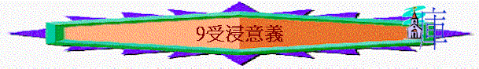
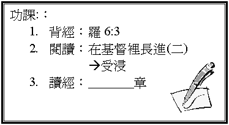

引言
你曾經見過人受洗/浸嗎？ 給你甚麼感受？
另外你認為基督徒需要受浸的嗎？
一．錯誤意義(彼前3:21)
受洗/浸與得救有關？
1.
受浸是否可除掉罪惡？ 使人得救恩？
2.
得永生的原因是甚麼？(弗2:8-9)
二．真正原因
1. 使命內容 (太28:18-19)
A.
大使命中有否包含洗禮？
B.
若問你基督徒可否不傳福音，你會怎答？
為甚麼？
C.
基督徒可否不受浸呢？
2.
主的榜樣
(太3:13-17)
A.
耶穌是誰？ 祂可不可以受約翰的洗？
B.
為何要受浸？ 給我們甚麼激勵？
3.
決心歸主
(羅6:3)
A.
聖經將受洗解釋為甚麼？
B.
昔日信從猶太教的選民受洗，代表甚麼？
有甚麼後果？
C
.
歸入了基督，可否走回頭路？
原來受洗表明那人決心一生歸入主，死也願意，向世人表明不走回頭路！
4.
信心表明
A.
與主同死
(羅6:3、6:7)
a.
原來受洗是一個確信，「知」道我們已與主同死，那麼何謂「與主同死」？
b.
原來「與主同死」是相信昔日轄制我們的罪身(舊人)已死，我們不再作罪的奴僕，可以有自由而不犯罪了，亦是向世人表明一生歸入主，你有幾多成把握，向人表明自己已「與主同死」呢？
B.
與主同活
(羅6:4-5、8)
a.
受洗也是一個確信，信我們已與主同活，而何謂「與主同活」？
b.
原來「與主同死」是指我們確信舊人已死，我們現擁有新生的樣式，並且深信將來必與主復活，你又有幾多成把握向人表明自己已「與主同活」呢？
三．教會資格
²
甚麼人可申請受浸？
每年何時舉行浸禮？
²
如何報名？ 有甚麼手續？
如何甄選？ 由誰負責呢
?
